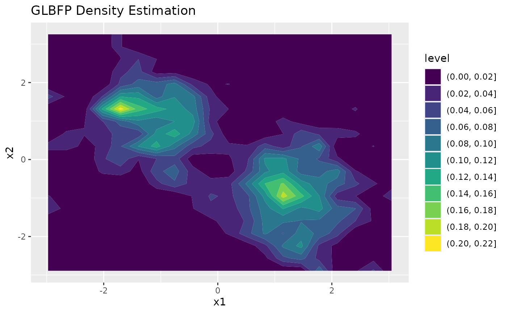

Two-dimensional density estimation
Source:vignettes/two-dimensional-density.Rmd
two-dimensional-density.RmdThis vignette illustrates two-dimensional density estimation and visualization.
Simulated example
The example uses a small reproducible mixture so the vignette remains quick to build.
Grid estimation
grid_fit <- GLBFP_estimate(x, b = b, m = c(1, 1), grid_size = 20)
summary(grid_fit)
#> Method: GLBFP
#> Dimension: 2
#> Grid points: 400
#> Density range: 0 to 0.210331281836707
#> Density median: 0.003486427
#> Density mean: 0.02480127Visualization
For two-dimensional regular grids, contour = TRUE
returns a static ggplot2 contour plot.
plot(grid_fit, contour = TRUE)
With contour = FALSE, the plot method returns an
interactive plotly surface. This is useful for exploration,
but static contours are usually easier to reproduce in manuscripts.
surface <- plot(grid_fit, contour = FALSE)
surface